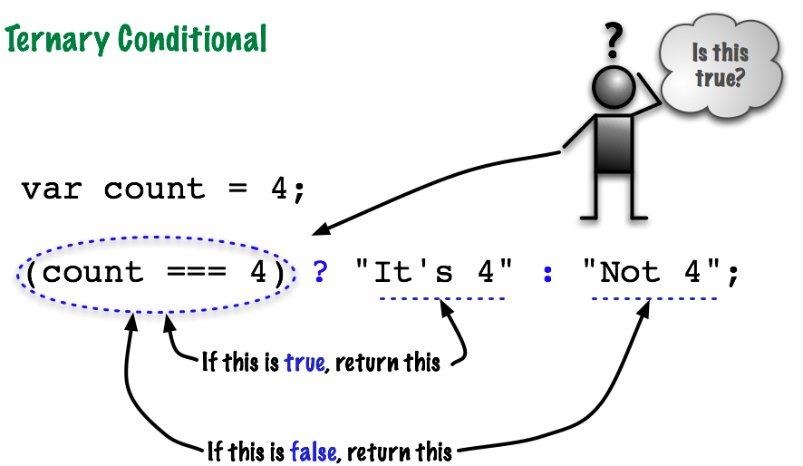

The Ternary Conditional
File: /ternaryConditional.html
This is a little JavaScript side trip down a shortcut.
What Does Ternary Mean?
You can probably guess:
- A Unary Operator is an operator with just one operand.
- A Binary Operator is an operator with two operands.
- A Ternary Operator is an operator with three operands. How's this possible?
The Ternary Conditional (?:)
This operator is usually abbreviated as ?:. It has three parts
(boolean expression) ? "return this if true" : "return this if false"
It is mostly used as a concise way to substitute a value for a code.
It also returns a value which makes it a great solution for assigning a value to a variable based on a binary choice.
The Ternary Syntax
Here's how it looks in a real program
// Ternary example
var count = 4;
var message;
message = (count === 4) ? "It's 4" : "Not 4";
document.write(message);
This is what it replaces
// if/else solution
var count = 4;
var message;
if (count === 4) {
message = "It's 4";
} else {
message = "Not 4";
}
document.write(message);
Tip: Use functions to improve readability.
Functions make ternary operators much more readable.
For example, if you had a boolean value and you wanted
to convert it from true to yes
and false to no, you could
write code like this:
function displayYesOrNo(value) {
return ( value ? "Yes" : "No");
}
document.write(displayYesOrNo(true));
Now we have a function that is easier to read and quite versatile.
A Quick Lab!
Few things are harder to put up with than a good example. -Mark Twain